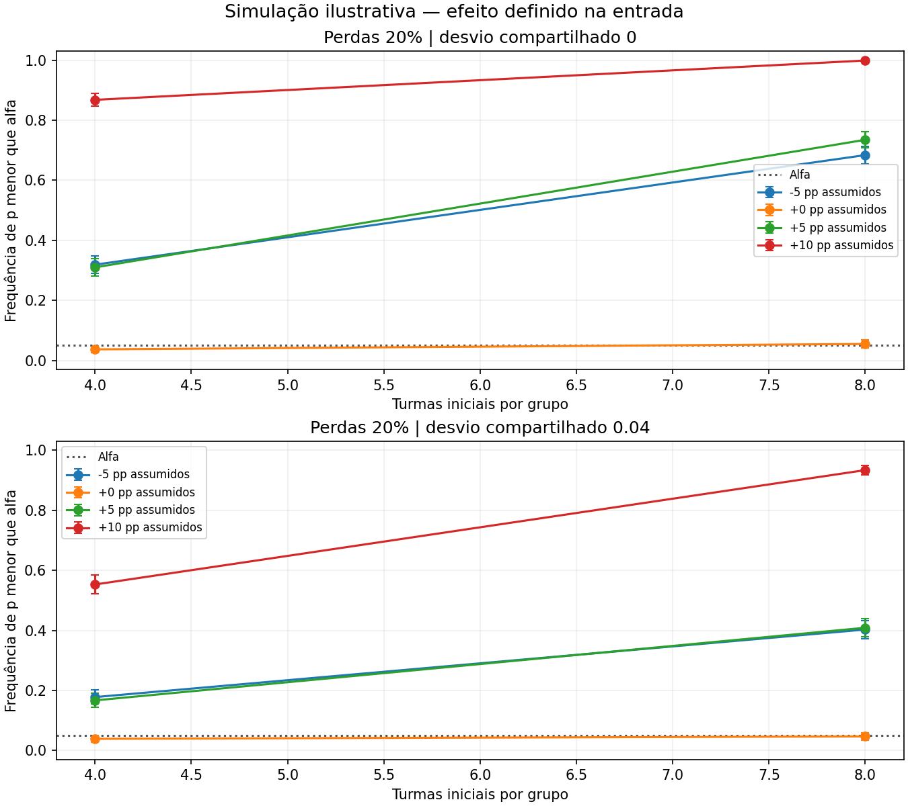

DADOS SINTÉTICOS — premissas ilustrativas, sem calibração ou validação das Arquiteturas.
Turmas inteiramente fictícias; a variabilidade entre turmas não foi estimada na rede escolar.

| Unidades por grupo | Pessoas totais | Efeito em pp | Perdas | Desvio turma | p menor que alfa | Inválidas |
|---|---|---|---|---|---|---|
| 4 | 160 | -5 | 20% | 0 | 31.9% | 0 |
| 4 | 160 | -5 | 20% | 0.04 | 17.8% | 0 |
| 4 | 160 | 0 | 20% | 0 | 3.7% | 0 |
| 4 | 160 | 0 | 20% | 0.04 | 3.9% | 0 |
| 4 | 160 | 5 | 20% | 0 | 31.0% | 0 |
| 4 | 160 | 5 | 20% | 0.04 | 16.7% | 0 |
| 4 | 160 | 10 | 20% | 0 | 86.8% | 0 |
| 4 | 160 | 10 | 20% | 0.04 | 55.3% | 0 |
| 8 | 320 | -5 | 20% | 0 | 68.4% | 0 |
| 8 | 320 | -5 | 20% | 0.04 | 40.3% | 0 |
| 8 | 320 | 0 | 20% | 0 | 5.5% | 0 |
| 8 | 320 | 0 | 20% | 0.04 | 4.7% | 0 |
| 8 | 320 | 5 | 20% | 0 | 73.5% | 0 |
| 8 | 320 | 5 | 20% | 0.04 | 40.9% | 0 |
| 8 | 320 | 10 | 20% | 0 | 99.9% | 0 |
| 8 | 320 | 10 | 20% | 0.04 | 93.4% | 0 |
# Relatório do laboratório de simulações DADOS SINTÉTICOS — premissas ilustrativas, sem calibração ou validação das Arquiteturas. Planejamento com atribuição por turmas Motor 0.1.0 | 16 cenários | 16.000 réplicas planejadas. ## Leitura do resultado Nos cenários nulos, a frequência de falsos positivos variou de 3.7% a 5.5%. Entre 8 cenários com benefício imposto, 5 ficaram abaixo do alvo de planejamento de 80%. Esse alvo é uma escolha, não exigência institucional. A frequência de rejeição não é a probabilidade de a teoria estar correta. Benefícios ou prejuízos foram definidos como entrada, não descobertos em alunos. O intervalo Monte Carlo descreve a incerteza numérica da frequência estimada; os percentis das diferenças são distribuição de estudos sintéticos, não intervalo de efeito real. ## Comparação dos cenários | Unidades por grupo | Pessoas iniciais no total | Efeito assumido em pp | Perdas | Desvio de turma | Frequência de p menor que alfa | Erro Monte Carlo | Válidas | | ---: | ---: | ---: | ---: | ---: | ---: | ---: | ---: | | 4 | 160 | -5 | 20% | 0 | 31.9% | 1.47% | 1000 | | 4 | 160 | -5 | 20% | 0.04 | 17.8% | 1.21% | 1000 | | 4 | 160 | +0 | 20% | 0 | 3.7% | 0.60% | 1000 | | 4 | 160 | +0 | 20% | 0.04 | 3.9% | 0.61% | 1000 | | 4 | 160 | +5 | 20% | 0 | 31.0% | 1.46% | 1000 | | 4 | 160 | +5 | 20% | 0.04 | 16.7% | 1.18% | 1000 | | 4 | 160 | +10 | 20% | 0 | 86.8% | 1.07% | 1000 | | 4 | 160 | +10 | 20% | 0.04 | 55.3% | 1.57% | 1000 | | 8 | 320 | -5 | 20% | 0 | 68.4% | 1.47% | 1000 | | 8 | 320 | -5 | 20% | 0.04 | 40.3% | 1.55% | 1000 | | 8 | 320 | +0 | 20% | 0 | 5.5% | 0.72% | 1000 | | 8 | 320 | +0 | 20% | 0.04 | 4.7% | 0.67% | 1000 | | 8 | 320 | +5 | 20% | 0 | 73.5% | 1.40% | 1000 | | 8 | 320 | +5 | 20% | 0.04 | 40.9% | 1.55% | 1000 | | 8 | 320 | +10 | 20% | 0 | 99.9% | 0.10% | 1000 | | 8 | 320 | +10 | 20% | 0.04 | 93.4% | 0.79% | 1000 | ## Direções para a pesquisa 1. Escolher a unidade real de atribuição: estudante ou turma. No modo turmas, o teste usa médias de turmas, evitando contar colegas como réplicas independentes. 2. Estimar a variabilidade, a qualidade da medida e as perdas com dados apropriados antes de recomendar tamanho de amostra. 3. Comparar benefícios pequenos, ausência de efeito e prejuízo. Um cenário favorável não comprova sua plausibilidade. 4. Planejar precisão, relevância pedagógica, retenção e transferência; não ampliar a amostra após olhar resultados apenas para atingir significância. 5. Manter a aplicação escolar e os procedimentos do mestrado alinhados com orientação e programa. ## Premissas e limites Os grupos são gerados da mesma população fictícia. Probabilidade inicial Beta(a,b), pré e pós com itens binomiais e ganho comum definido na configuração. O efeito adicional entra apenas no pós; probabilidades são limitadas a 1%–99%. No modo turmas, acrescenta-se ao pós uma variação normal compartilhada por turma, com desvio indicado na configuração. Esse desvio não é uma estimativa de ICC. A inferência ocorre entre turmas. Perdas são aleatórias e independentes de desempenho. Não se modelam perdas seletivas, mudanças entre séries, múltiplas escolas ou contaminação entre grupos. Réplicas sem dados suficientes são excluídas e contadas como inválidas. Não há modelo de cérebro, dança, mecanismo da cadência textual ou validação da cooperação. O motor atual orienta planejamento estatístico. Modelos mecanísticos ficam na trilha de desenvolvimento. O manifesto identifica código, configuração, ambiente e hashes dos arquivos. Hash é conferência de integridade, não certificação científica. ## Arquivos configuracao.json; resultados.json; resultados.csv; grafico.png; relatorio.html; manifesto.json. O conteúdo completo está no JSON; o resumo serve à consulta rápida.